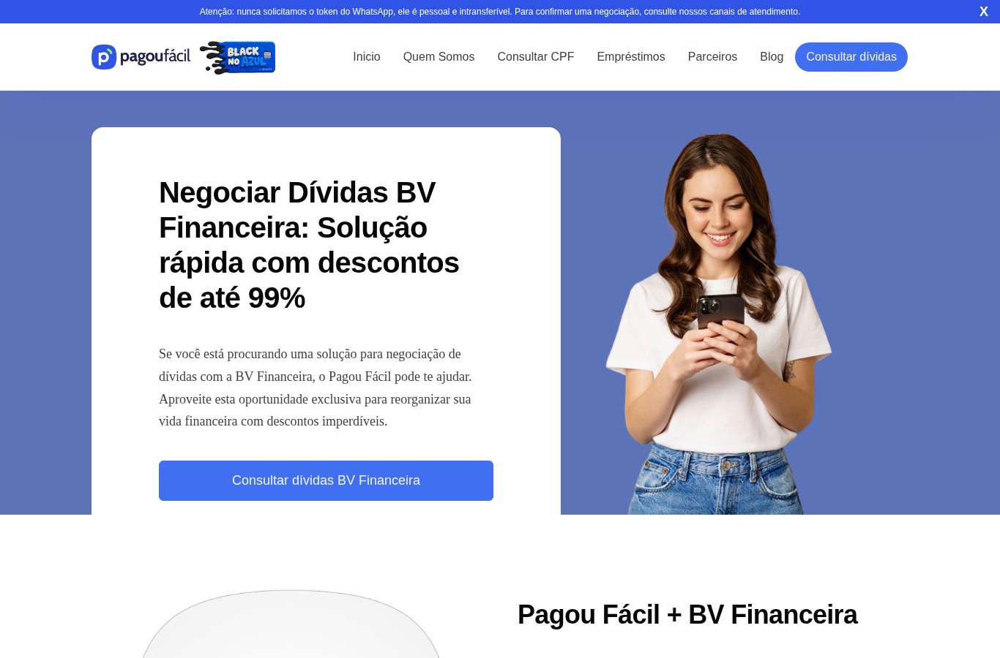
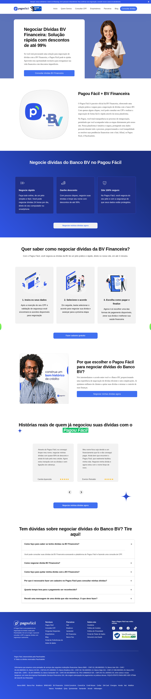

Sistema de Investigação de Marca e Identidade Online
https://www.pagoufacil.com.br/parceiros/bvfinanceira/
Prioridade: MEDIUM · Cenário: B_AMBIGUOUS_COMMUNICATION · Revisão humana: PENDING
Trata-se de plataforma de recuperação de crédito/renegociação de dívidas da Paschoalotto. Embora a identidade comercial própria do Pagou Fácil seja predominante e declarada, a página utiliza landing page específica com a marca Banco BV, acopla o logotipo da instituição e afirma ser 'parceiro oficial da BV Financeira', sem detalhar os dados de correspondente bancário/mandato formal para a BV. Recomenda-se revisão para checar a governança contratual e alinhamento às diretrizes da Res. CMN 4.935/2021. [Revisor: CONFIRM] A página pertence à plataforma de cobrança e renegociação de crédito Pagou Fácil (Paschoalotto Serviços Financeiros S/A). Trata-se de terceiro atuando na intermediação financeira que faz uso do logotipo do Banco BV e da denominação 'parceiro oficial da BV Financeira' em landing page dedicada, sem discriminar expressamente o CNPJ da instituição contratante e os dados completos da condição de correspondente para o Banco BV no rodapé regulatório. A classificação em REVIEW_REQUIRED sustenta-se conforme o art. 14 da Res. CMN 4.935/2021 para validação dos termos de parceria e conformidade regulatória.


| Ref | Tipo | Local | Conteúdo |
|---|---|---|---|
| E-URL | domain | url | URL final: https://www.pagoufacil.com.br/parceiros/bvfinanceira/ (domínio: www.pagoufacil.com.br) |
| E-COLLECT | network | collection | Status da coleta: OK; HTTP 200; ocorrências: network did not become idle (continuing) |
| E-DISC-001 | text | search_index | Índice de busca (grounding): pagoufacil.com.br — **URL:** `https://pagoufacil.com.br` | **Expressão utilizada:** *"O Pagou Fácil é parceiro oficial da BV Financeira..."* | **Como utiliza a marca:** Landing page dedicada à regularização de dívidas e financiamento veicular da BV, solicitando preenchimento direto de CPF | CMN 4.935/2021):** Exibe vínculo contratual com a Paschoalotto, porém explora proeminentemente o título de canal / *parceiro oficial* do Banco BV para geração de tráfego próprio |
| E-SHOT-VIEWPORT | screenshot | viewport | evidence/Cd11dfce1b8/attempt-1/viewport.png (sha256 14fc8046a4c954e4…) |
| E-SHOT-FULL | screenshot | page | evidence/Cd11dfce1b8/attempt-1/fullpage.png (sha256 db2596f043832390…) |
| E-TITLE | title | head | BV Financeira - Se Pagou Fácil, é Paschoalotto |
| E-META-1 | meta | head | description: Precisa negociar dívidas com a BV Financeira? Utilize o Pagou Fácil para renegociar online de forma rápida e segura. |
| E-META-2 | meta | head | og:site_name: Se Pagou Fácil, é Paschoalotto |
| E-META-3 | meta | head | og:title: BV Financeira - Se Pagou Fácil, é Paschoalotto |
| E-META-4 | meta | head | og:description: Precisa negociar dívidas com a BV Financeira? Utilize o Pagou Fácil para renegociar online de forma rápida e segura. |
| E-CANONICAL | meta | head | https://www.pagoufacil.com.br/parceiros/bvfinanceira/ |
| E-HEAD-1 | heading | page | Negociar Dívidas BV Financeira: Solução rápida com descontos de até 99% |
| E-HEAD-2 | heading | page | Pagou Fácil + BV Financeira |
| E-HEAD-3 | heading | page | Negocie dívidas do Banco BV no Pagou Fácil |
| E-HEAD-4 | heading | page | Negocie rápido |
| E-HEAD-5 | heading | page | Ganhe desconto |
| E-HEAD-6 | heading | page | Site 100% seguro |
| E-HEAD-7 | heading | page | Quer saber como negociar dívidas da BV Financeira? |
| E-HEAD-8 | heading | page | 1. Insira os seus dados |
| E-HEAD-9 | heading | page | 2. Selecione o acordo |
| E-HEAD-10 | heading | page | 3. Escolha como pagar e finalize |
| E-HEAD-11 | heading | page | Por que escolher o Pagou Fácil para negociar dívidas do Banco BV? |
| E-HEAD-12 | heading | page | Histórias reais de quem já negociou suas dívidas com o Pagou Fácil |
| E-HEAD-13 | heading | page | Tem dúvidas sobre negociar dívidas do Banco BV? Tire aqui! |
| E-HEAD-14 | heading | page | Como faço para saber se tenho dívidas na BV Financeira? |
| E-HEAD-15 | heading | page | Como negociar dívida BV Financeira? |
| E-HDR | text | header | Atenção: nunca solicitamos o token do WhatsApp, ele é pessoal e intransferível. Para confirmar uma negociação, consulte nossos canais de atendimento. X Inicio Quem Somos Consultar CPF Empréstimos Parceiros Blog Consultar dívidas |
| E-FOLD | text | viewport (acima da dobra) | Menu Inicio Quem Somos Consultar CPF Empréstimos Empréstimo Antecipação de Salário Empréstimo Cartão de Crédito Empréstimo Consignado Empréstimo Fgts Empréstimo Garantia de Veículo Empréstimo Imóvel Empréstimo Pessoal Parceiros Blog Consultar dívidas Siga o Pagou Fácil nas rede sociais Atenção: nunca solicitamos o token do WhatsApp, ele é pessoal e intransferível. Para confirmar uma negociação, consulte nossos canais de atendimento. X Inicio Quem Somos Consultar CPF Empréstimos Parceiros Blog Consultar dívidas Negociar Dívidas BV Financeira: Solução rápida com descontos de até 99% Se você está procurando uma solução para negociação de dívidas com a BV Financeira, o Pagou Fácil pode te ajudar. Aproveite esta oportunidade exclusiva para reorganizar sua vida financeira com descontos imperdíveis. Consultar dívidas BV Financeira Pagou Fácil + BV Financeira |
| E-FTR | text | footer | O Pagou Fácil é uma plataforma de negociação de dívidas criada pela Paschoalotto. Em um só lugar, é possível consultar o CPF e negociar dívidas com segurança e autonomia. Serviços Pagou Fácil Consultar CPF Perguntas frequentes Empréstimos Blog Portal de Preferências do titular de dados Parceiros Itaú Bradesco Santander BV Financeira Banco Pan Sobre-nós Ouvidoria Política de Cookies Política de Privacidade Portal do Titular de Dados Denuncie uma fraude Siga o Pagou Fácil nas redes sociais Pagou Fácil, desenvolvido pela Paschoalotto © Todos os direitos reservados Paschoalotto Informamos que atuamos como prestador de serviços das seguintes instituições financeiras: Banco BMG – CNPJ 61.186.680/0001-74, Banco Inter S/A – CNPJ 00.416.968/0001-01, Banco C6 S/A – CNPJ31.872.495/0001-72, Banco Bradesco S/A – CNPJ 60.746.948/0001-12, Banco Digio S/A – CNPJ 27.098.060/0001-45, Banco RCI Brasil S/A – CNPJ – 62.307.848/0001-15, Banco Santander S/A – CNPJ 90.400.888/0001-42, ITAU UNIBANCO S/A – CNPJ 60.701.190/0001-04, entre outras e essas tampouco, em nome da empresa Paschoalotto Serviços Financeiros S/A, não exigem antecipação de pagamentos ou práticas dessas. FIQUE ATENTO PARA NÃO SER VÍTIMA DE GOLPE OU FRAUDES Banco BMG Banco Pan Bradesco BRBCARD BV Financeira CAIXA Consórcio ConectCar Credi Nissan Crefaz DM Card Energisa Honda Itaú Mobilize Natura PortoBank Qista QuintoAndar Santander Sicoob Volkswagen |
| E-NAV | nav | header | Atenção: nunca solicitamos o token do WhatsApp, ele é pessoal e intransferível. Para confirmar uma negociação, consulte nossos canais de atendimento. <https://api.whatsapp.com/send/?phone=551421088000> | <https://www.pagoufacil.com.br/> | Inicio <https://www.pagoufacil.com.br/> | Quem Somos <https://www.pagoufacil.com.br/quem-somos/> | Consultar CPF <https://www.pagoufacil.com.br/consultar-cpf> | Empréstimos <https://www.pagoufacil.com.br/emprestimos/> | Parceiros <https://www.pagoufacil.com.br/parceiros> | Blog <https://www.pagoufacil.com.br/blog> | Consultar dívidas <https://queropagar.pagoufacil.com.br/> |
| E-CTA-1 | cta | header | X |
| E-CTA-2 | cta | page | Consultar dívidas BV Financeira <https://queropagar.pagoufacil.com.br/> |
| E-CTA-3 | cta | page | Negociar minhas dívidas agora <https://queropagar.pagoufacil.com.br/> |
| E-CTA-4 | cta | page | Fazer cadastro gratuito <https://queropagar.pagoufacil.com.br/> |
| E-CTA-5 | cta | page | Negociar minhas dívidas agora <https://queropagar.pagoufacil.com.br/> |
| E-CTA-6 | cta | page | Voltar |
| E-CTA-7 | cta | page | Próximo |
| E-CTA-8 | cta | page | Negociar minhas dívidas agora <https://queropagar.pagoufacil.com.br/> |
| E-CONTACT-1 | contact | page | Facebook <https://www.facebook.com/pagoufacil> |
| E-CONTACT-2 | contact | page | Instagram <https://www.instagram.com/pagoufacil/> |
| E-CONTACT-3 | contact | header | Atenção: nunca solicitamos o token do WhatsApp, ele é pessoal e intransferível. Para confirmar uma negociação, consulte nossos canais de atendimento. <https://api.whatsapp.com/send/?phone=551421088000> |
| E-CONTACT-4 | contact | footer | Instagram <https://www.instagram.com/pagoufacil/> |
| E-CONTACT-5 | contact | footer | Facebook <https://web.facebook.com/pagoufacil?_rdc=1&_rdr> |
| E-IMG-1 | image | header (acima da dobra) | imagem alt='Pagou Facil' src=https://www.pagoufacil.com.br/wp-content/themes/pagoufacil/img/logo-pagoufacil-bf.png (260x56, acima da dobra) |
| E-IMG-2 | image | footer | imagem alt='Logo Pagou Fácil' src=https://www.pagoufacil.com.br/wp-content/themes/pagoufacil/img/LOGO-PF.webp (200x51, abaixo da dobra) |
| E-IMG-3 | image | footer | imagem alt='Instagram' src=https://www.pagoufacil.com.br/wp-content/themes/pagoufacil/img/lp-pf/icons/InstagramLogo.webp (32x33, abaixo da dobra) |
| E-IMG-4 | image | footer | imagem alt='Youtube' src=https://www.pagoufacil.com.br/wp-content/themes/pagoufacil/img/lp-pf/icons/YoutubeLogo.webp (32x33, abaixo da dobra) |
| E-IMG-5 | image | footer | imagem alt='Facebook' src=https://www.pagoufacil.com.br/wp-content/themes/pagoufacil/img/lp-pf/icons/FacebookLogo.webp (32x33, abaixo da dobra) |
| E-IMG-6 | image | footer | imagem alt='Tiktok' src=https://www.pagoufacil.com.br/wp-content/themes/pagoufacil/img/lp-pf/icons/TiktokLogo.webp (32x33, abaixo da dobra) |
| E-TXT-001 | text | page | Parceiros |
| E-TXT-002 | text | page | Atenção: nunca solicitamos o token do WhatsApp, ele é pessoal e intransferível. Para confirmar uma negociação, consulte nossos canais de atendimento. |
| E-TXT-003 | text | page | Parceiros |
| E-TXT-004 | text | page | Negociar Dívidas BV Financeira: Solução rápida com descontos de até 99% |
| E-TXT-005 | text | page | Se você está procurando uma solução para negociação de dívidas com a BV Financeira, o Pagou Fácil pode te ajudar. Aproveite esta oportunidade exclusiva para reorganizar sua vida financeira com descontos imperdíveis. |
| E-TXT-006 | text | page | Consultar dívidas BV Financeira |
| E-TXT-007 | text | page | Pagou Fácil + BV Financeira |
| E-TXT-008 | text | page | O Pagou Fácil é parceiro oficial da BV Financeira, oferecendo uma solução prática e segura para a negociação de dívidas com o banco BV. Com apenas alguns cliques, você pode consultar seu CPF e realizar a negociação de forma fácil e rápida através da nossa plataforma. |
| E-TXT-009 | text | page | Negocie dívidas do Banco BV no Pagou Fácil |
| E-TXT-010 | text | page | Quer saber como negociar dívidas da BV Financeira? |
| E-TXT-011 | text | page | Com o Pagou Fácil, você negocia as dívidas da BV de um jeito prático e rápido, direto no nosso site, em até 2 minutos. |
| E-TXT-012 | text | page | Por que escolher o Pagou Fácil para negociar dívidas do Banco BV? |
| E-TXT-013 | text | page | Nós intermediamos o acordo entre você e o Banco BV, proporcionando uma experiência de negociação de dívidas eficiente e sem complicações. Já ajudamos milhares de clientes a quitar suas dívidas e retomar o controle de suas finanças. |
| E-TXT-014 | text | page | Pela primeira vez na minha vida, atrasei o cartão de crédito. Entrei em contato com o banco e eles me orientaram que eu podia negociar através do Pagou Fácil. Acessei o site, fiz meu cadastro e pronto, já encontrei minha dívida. Muito fácil, assim como eles dizem. |
| E-TXT-015 | text | page | Tem dúvidas sobre negociar dívidas do Banco BV? Tire aqui! |
| E-TXT-016 | text | page | Como faço para saber se tenho dívidas na BV Financeira? |
| E-TXT-017 | text | page | Você pode consultar suas dívidas da BV Financeira acessando a plataforma do Pagou Fácil e fazendo uma consulta de CPF. |
| E-TXT-018 | text | page | Como negociar dívida BV Financeira? |
| E-TXT-019 | text | page | Como faço para quitar minha dívida com a BV Financeira? |
| E-TXT-020 | text | page | Parceiros |
| E-TXT-021 | text | page | BV Financeira |
| E-TXT-022 | text | page | Banco Pan |
| E-TXT-023 | text | page | Ouvidoria |
| E-TXT-024 | text | page | Informamos que atuamos como prestador de serviços das seguintes instituições financeiras: Banco BMG – CNPJ 61.186.680/0001-74, Banco Inter S/A – CNPJ 00.416.968/0001-01, Banco C6 S/A – CNPJ31.872.495/0001-72, Banco Bradesco S/A – CNPJ 60.746.948/0001-12, Banco Digio S/A – CNPJ 27.098.060/0001-45, Banco RCI Brasil S/A – CNPJ – 62.307.848/0001-15, Banco Santander S/A – CNPJ 90.400.888/0001-42, ITAU |
| E-TXT-025 | text | page | UNIBANCO S/A – CNPJ 60.701.190/0001-04, entre outras e essas tampouco, em nome da empresa Paschoalotto Serviços Financeiros S/A, não exigem antecipação de pagamentos ou práticas dessas. FIQUE ATENTO PARA NÃO SER VÍTIMA DE GOLPE OU FRAUDES |
| E-TXT-026 | text | page | Banco BMG Banco Pan Bradesco BRBCARD BV Financeira CAIXA Consórcio ConectCar Credi Nissan Crefaz DM Card Energisa Honda Itaú Mobilize Natura PortoBank Qista QuintoAndar Santander Sicoob Volkswagen |
| Dimensão | Sinal | Achado | Refs |
|---|---|---|---|
| VISUAL_IDENTITY | NEUTRAL | A identidade visual própria da plataforma Pagou Fácil (marca, paleta azul e tipografia institucional) prevalece na estrutura do site. | E-SHOT-VIEWPORT E-SHOT-FULL E-IMG-1 |
| DECLARED_COMMERCIAL_IDENTITY | LEGITIMATE | A página identifica claramente que a plataforma Pagou Fácil é desenvolvida e operada pela Paschoalotto Serviços Financeiros S/A. | E-TITLE E-FTR E-TXT-025 |
| CORRESPONDENT_TRANSPARENCY | CONFUSION | Falta explicitar com clareza a natureza exata da relação jurídica com o Banco BV (prestador de cobrança, correspondente bancário ou parceiro) e o CNPJ da instituição contratante. | E-FTR E-TXT-024 |
| INSTITUTIONAL_LANGUAGE | CONFUSION | Emprego da afirmação de 'parceiro oficial da BV Financeira' em chamada comercial para negociação de dívidas. | E-TXT-008 E-DISC-001 |
| LOGO_USAGE | CONFUSION | O logotipo contemporâneo do Banco BV ('bv banco') é exibido em vinheta composta com a marca do terceiro comercial. | E-SHOT-FULL E-TXT-007 |
| SERVICE_JOURNEY | NEUTRAL | A jornada de captação direciona para consulta de CPF e negociação de débitos no subdomínio queropagar.pagoufacil.com.br, atuando como intermediadora declarada. | E-CTA-2 E-TXT-013 |
| CONTACT_CHANNELS | LEGITIMATE | Canais de contato, redes sociais e canal de WhatsApp pertencem à própria empresa operadora Paschoalotto / Pagou Fácil. | E-CONTACT-3 E-NAV E-FTR |
| CONSUMER_CONFUSION | NEUTRAL | Apesar do destaque e do termo 'parceiro oficial', o consumidor é informado de que se trata de uma intermediação operada pela Paschoalotto. | E-TXT-013 E-FTR |
Trata-se de plataforma de recuperação de crédito/renegociação de dívidas da Paschoalotto. Embora a identidade comercial própria do Pagou Fácil seja predominante e declarada, a página utiliza landing page específica com a marca Banco BV, acopla o logotipo da instituição e afirma ser 'parceiro oficial da BV Financeira', sem detalhar os dados de correspondente bancário/mandato formal para a BV. Recomenda-se revisão para checar a governança contratual e alinhamento às diretrizes da Res. CMN 4.935/2021.
Correspondência apenas por nome (ou fonte não autoritativa) no cadastro; requer confirmação por CNPJ.
| Tipo | Valor | Ref | Contexto |
|---|---|---|---|
| domain | pagoufacil.com.br | E-URL | |
| cnpj | 61.186.680/0001-74 | E-FTR | Paschoalotto Informamos que atuamos como prestador de serviços das seguintes instituições financeiras: Banco BMG – CNPJ 61.186.680/0001-74 |
| cnpj | 00.416.968/0001-01 | E-FTR | , Banco Inter S/A – CNPJ 00.416.968/0001-01 |
| cnpj | 60.746.948/0001-12 | E-FTR | , Banco C6 S/A – CNPJ31.872.495/0001-72, Banco Bradesco S/A – CNPJ 60.746.948/0001-12 |
| cnpj | 27.098.060/0001-45 | E-FTR | , Banco Digio S/A – CNPJ 27.098.060/0001-45 |
| cnpj | 62.307.848/0001-15 | E-FTR | , Banco RCI Brasil S/A – CNPJ – 62.307.848/0001-15 |
| cnpj | 90.400.888/0001-42 | E-FTR | , Banco Santander S/A – CNPJ 90.400.888/0001-42 |
| cnpj | 60.701.190/0001-04 | E-FTR | , ITAU UNIBANCO S/A – CNPJ 60.701.190/0001-04 |
| legal_name | Paschoalotto Serviços Financeiros S/A | E-FTR | |
| social_profile | https://www.facebook.com/pagoufacil | E-CONTACT-1 | |
| social_profile | https://www.instagram.com/pagoufacil/ | E-CONTACT-2 | |
| legal_name | UNIBANCO S/A | E-TXT-025 | |
| trade_name | Se Pagou Fácil, é Paschoalotto | E-META-2 | |
| Atenção: nunca solicitamos o token do WhatsApp, ele é pessoal e intransferível. Para confirmar uma negociação, consulte nossos canais de atendimento. <https://api.whatsapp.com/send/?phone=551421088000 | E-CONTACT-3 | ||
| correspondent_declaration | prestador de serviços | E-FTR | O Pagou Fácil é uma plataforma de negociação de dívidas criada pela Paschoalotto. Em um só lugar, é possível consultar o CPF e negociar dívidas com segurança e autonomia. Serviços Pagou Fácil Consulta |
| partnership_declaration | parceiro oficial | E-DISC-001 | **Expressão utilizada:** *"O Pagou Fácil é parceiro oficial da BV Financeira..."* |
| partnership_declaration | parceiros | E-CANONICAL | https://www.pagoufacil.com.br/parceiros/bvfinanceira/ |
Mapeamento indicativo para apoio à auditoria. Não constitui conclusão regulatória; a decisão definitiva pertence à auditoria.
Fonte: NORMATIVE
Art. 14. O contrato de correspondente deve estabelecer: [...] II - vedação à utilização, pelo contratado, de logomarca ou de outros atributos que sejam similares aos adotados pela instituição contratante em suas agências, postos de atendimento, sítio eletrônico na internet, aplicativo ou outras plataformas de comunicação em rede;
Hipótese: Uso de logomarca, uso excessivo/desproporcional ou de atributos similares aos adotados pela contratante em seus canais. Aplicável somente se confirmado o vínculo de correspondente.
Evidência observada: E-HEAD-2 E-SHOT-FULL E-TXT-007
Informação faltante:
Fonte: NORMATIVE
Art. 14. O contrato de correspondente deve estabelecer: [...] III - divulgação ao público, pelo contratado, de sua condição de prestador de serviços à instituição contratante, identificada pelo nome com que é conhecida no mercado, com descrição dos produtos e serviços oferecidos e canais de contato da instituição contratante, inclusive de sua ouvidoria, em local visível, em destaque e em formato legível, por meio de: a) sítio eletrônico do correspondente na internet, acessível na página inicial; b) aplicativo e outras plataformas de comunicação em rede do correspondente; [...]
Hipótese: Divulgação ao público da condição de prestador de serviços/parceria ausente, insuficiente, ambígua ou sem destaque. Aplicável somente se confirmado o vínculo de correspondente.
Evidência observada: E-DISC-001 E-FTR E-TXT-008 E-TXT-024 E-TXT-025
Informação faltante:
Fonte: NORMATIVE
Art. 3º O correspondente atua por conta e sob as diretrizes da instituição contratante, que assume inteira responsabilidade pelo atendimento prestado aos clientes e usuários por meio do contratado.
Evidência observada: E-CONTACT-3 E-FTR E-NAV
Limitações: requisitos contratuais/internos não fornecidos: mapeamento limitado ao texto normativo
Decisão: CONFIRM → REVIEW_REQUIRED / MEDIUM
A página pertence à plataforma de cobrança e renegociação de crédito Pagou Fácil (Paschoalotto Serviços Financeiros S/A). Trata-se de terceiro atuando na intermediação financeira que faz uso do logotipo do Banco BV e da denominação 'parceiro oficial da BV Financeira' em landing page dedicada, sem discriminar expressamente o CNPJ da instituição contratante e os dados completos da condição de correspondente para o Banco BV no rodapé regulatório. A classificação em REVIEW_REQUIRED sustenta-se conforme o art. 14 da Res. CMN 4.935/2021 para validação dos termos de parceria e conformidade regulatória.
| Tema | Severidade | Questionamento | Refs |
|---|---|---|---|
| contradictory_evidence | LOW | Coexistem declaração de correspondente e indícios de confusão. | E-FTR E-TXT-024 |
| Fonte | Consulta / hipótese | URL original | Título / trecho |
|---|---|---|---|
| grounding | Objetivo: Uso de expressões de oficialidade ('parceiro oficial', 'representante', 'correspondente autorizado', 'agência BV').
Execute no Google Search as seguintes consultas (dorks):
- ("parceiro oficial" OR "parceiros autorizados" OR "correspondente autorizado" OR "correspondente bancário autorizado") ("Banco BV" OR "bv financeira") -site:bv.com.br -site:bancobv.com.br -site:bvfinanceira.com.br -site:bvinvestimentos.com.br -site:napista.com.br -site:bvopen.com.br -site:meufinanciamentosolar.com.br -site:votorantim.com.br -site:vam.com.br -site:reclameaqui.com.br -site:jusbrasil.com.br -site:jus.br
- ("representante" OR "agência BV" OR "agência Banco BV" OR "canal oficial" OR "site oficial") ("Banco BV" OR "bv financeira") financiamento -site:bv.com.br -site:bancobv.com.br -site:bvfinanceira.com.br -site:bvinvestimentos.com.br -site:napista.com.br -site:bvopen.com.br -site:meufinanciamentosolar.com.br -site:votorantim.com.br -site:vam.com.br -site:reclameaqui.com.br -site:jusbrasil.com.br -site:jus.br
Liste de forma abrangente as páginas públicas encontradas (até 12 resultados distintos), informando para cada uma o nome do estabelecimento/perfil, a URL e como a marca é utilizada (destaque visual, título, feirão, simulador, redes sociais e se há ou não identificação clara de CNPJ e condição de correspondente bancário). H4-official-language | https://www.pagoufacil.com.br/parceiros/bvfinanceira/ | pagoufacil.com.br **URL:** `https://pagoufacil.com.br` | **Expressão utilizada:** *"O Pagou Fácil é parceiro oficial da BV Financeira..."* | **Como utiliza a marca:** Landing page dedicada à regularização de dívidas e financiamento veicular da BV, solicitando preenchimento direto de CPF | CMN 4.935/2021):** Exibe vínculo contratual com a Paschoalotto, porém explora proeminentemente o título de canal / *parceiro oficial* do Banco BV para geração de tráfego próprio |
Original: https://www.pagoufacil.com.br/parceiros/bvfinanceira/
Final: https://www.pagoufacil.com.br/parceiros/bvfinanceira/
| Artefato | Caminho | SHA-256 | Bytes |
|---|---|---|---|
| screenshot_viewport | evidence/Cd11dfce1b8/attempt-1/viewport.png | 14fc8046a4c954e40183656f0f49c6a3f275f4c986d3b8baac50ba2eaaf3b2ad | 304593 |
| screenshot_full | evidence/Cd11dfce1b8/attempt-1/fullpage.png | db2596f0438323905c3340cfcc8aeb415dde49bbd567aae2f008ff6964abdb01 | 1840943 |
| html | evidence/Cd11dfce1b8/attempt-1/page.html.txt | 22b06c12cf60837fc50d2d346de0a5b34005c1285815bc41eecada5e52d51a84 | 87950 |
| text | evidence/Cd11dfce1b8/attempt-1/text.txt | 07bf5d3732c3835874681fdc30ccab3534220575c7554d1e0c152cb18226efe7 | 6648 |
| page_data | evidence/Cd11dfce1b8/attempt-1/page.json | cd98cbc840ee5dc1838d849598a9f01c1633d6c12e83852851bf0b0fdcdf257c | 31038 |
| Quando | De | Para | Nota |
|---|---|---|---|
| 2026-11-25T18:12:00+00:00 | DISCOVERED | QUEUED | prioritised (score 6.5) |
| 2026-11-25T18:14:08+00:00 | QUEUED | COLLECTING | |
| 2026-11-25T18:14:20+00:00 | COLLECTING | COLLECTED | |
| 2026-11-25T18:14:20+00:00 | COLLECTED | ANALYZING | |
| 2026-11-25T18:14:42+00:00 | ANALYZING | REVIEWING | |
| 2026-11-25T18:14:52+00:00 | REVIEWING | COMPLETED |